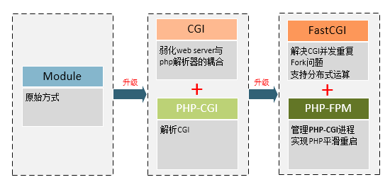

Software
SSH
安装
# CentOS sudo yum -y install openssh-server # Ubuntu sudo apt-get install openssh-server
配置文件
# 查看配置 awk '{if($0~/^#/||0==length($0))next; print $0}' /etc/ssh/sshd_config vim '/etc/ssh/sshd_config'
# Port 22
#AddressFamily any
AddressFamily inet
#ListenAddress 0.0.0.0
#ListenAddress ::
AuthorizedKeysFile .ssh/authorized_keys
PasswordAuthentication yes
X11Forwarding yes
修改端口
# 查看当前端口 egrep '^Port ' '/etc/ssh/sshd_config' # 修改端口 changeConfig /etc/ssh/sshd_config Port ' ' 2048 # 防火墙 firewall-cmd --permanent --zone=public --add-port=2048/tcp firewall-cmd --reload firewall-cmd --permanent --query-port=2048/tcp # 重启服务 systemctl restart sshd # 查看端口号 netstat -tnlp | grep '/sshd\s*$' # 测试登录 ssh root@localhost -p 2048
SSH免密登录
# -m 密钥格式 { RFC4716 | PKCS8 | PEM } # -b 密钥长度（单位为bit） # -t 加密算法 { dsa | ecdsa | ecdsa-sk | ed25519 | ed25519-sk | rsa } # -P 密码短语 # -C 备注信息 # -f 保存的文件名 ssh-keygen -m PEM -t rsa -b 4096 -P '' -f ~/.ssh/id_rsa # ssh-keygen -t rsa -P '' -f ~/.ssh/id_rsa pushd ~/.ssh; ll # -rw------- 1 root root 1679 * id_rsa # -rw-r--r-- 1 root root 408 * id_rsa.pub # id_rsa : 私钥（个人本地持有） # id_rsa.pub : 公钥（远程主机持有） cp ./id_rsa.pub ./authorized_keys # ssh -l root -i <私钥> <地址>
异常解决
Couldn't load this key (OpenSSH SSH-2 private key(old PEM format))
- puttygen.exe、Conversations、Import keys、选择
id_rsa、Save private key
禁用密码登录
# 查看是否开启 egrep '^PasswordAuthentication ' '/etc/ssh/sshd_config' # 关闭密码登录 changeConfig /etc/ssh/sshd_config PasswordAuthentication ' ' no # 重启应用 systemctl restart sshd # 检查是否可以密码登录 ssh root@localhost -p 2048
FTP
安装
# CentOS yum -y install vsftpd firewall-cmd --zone=public --add-port=20-21/tcp --permanent firewall-cmd --zone=public --add-port=40000-40010/tcp --permanent firewall-cmd --reload firewall-cmd --list-all systemctl enable vsftpd # Ubuntu # sudo apt-get install vsftpd sudo apt install vsftpd sudo ufw allow to any port 20,21,40000:40010 proto tcp sudo ufw status verbose systemctl enable vsftpd # 服务管理 systemctl status vsftpd
配置
# CentOS egrep -v '^#' /etc/vsftpd/vsftpd.conf vim /etc/vsftpd/vsftpd.conf # Ubuntu egrep -v '^#' /etc/vsftpd.conf sudo vim /etc/vsftpd.conf
# 访问成功欢迎语 ftpd_banner=Welcome to the FTP service. # 允许为目录配置显示信息 dirmessage_enable=YES # 监听 listen=NO listen_ipv6=YES # 确保传输连接源自端口20 connect_from_port_20=YES # 是可用`ls -R`命令 ls_recurse_enable=YES # 上传总开关 write_enable=YES # 匿名用户 anonymous_enable=NO anon_umask=077 # 匿名用户登录不询问密码 no_anon_password=YES anon_upload_enable=NO anon_mkdir_write_enable=NO # 匿名用户主目录 # anon_root= # 匿名用户上传文件后修改其所有者 # chown_uploads=YES # chown_username=whoever # 本地用户 local_enable=YES local_umask=022 # 限制用户到其家目录 # chroot_local_user=YES # allow_writeable_chroot=YES # 当启用chroot后，文件中是不启用chroot的用户 # chroot_list_enable=YES # chroot_list_file=/etc/vsftpd.chroot_list # 用作chroot监狱（建议使用默认配置） secure_chroot_dir=/var/run/vsftpd/empty # SSL # rsa_cert_file= # rsa_private_key_file= # ssl_enable=NO # LOG # 记录上传下载日志 xferlog_enable=YES # 记录到xferlog_file所指文件 xferlog_std_format=YES xferlog_file=/var/log/vsftpd.log # 被动连接 pasv_enable=YES pasv_min_port=40000 pasv_max_port=40010 pasv_promiscuous=NO
systemctl restart vsftpd
Ubuntu追加设置
# 追加设置 sudo su - vsftpd=/etc/vsftpd.conf changeConfig $vsftpd write_enable = YES changeConfig $vsftpd chroot_local_user = YES changeConfig $vsftpd allow_writeable_chroot = YES changeConfig $vsftpd pasv_enable = YES changeConfig $vsftpd pasv_min_port = 40000 changeConfig $vsftpd pasv_max_port = 40010 changeConfig $vsftpd pasv_promiscuous = NO egrep -v '^#' $vsftpd systemctl restart vsftpd
Apache2
安装
# 安装 yum install -y httpd # 防火墙 firewall-cmd --permanent --zone=public --add-service=http firewall-cmd --permanent --zone=public --add-service=https firewall-cmd --reload # 启动 systemctl enable httpd systemctl start httpd
Nginx
安装
CentOS
# 添加源 yum -y install yum-utils vim '/etc/yum.repos.d/nginx.repo'
[nginx-stable] name=nginx stable repo baseurl=http://nginx.org/packages/centos/$releasever/$basearch/ gpgcheck=1 enabled=1 gpgkey=https://nginx.org/keys/nginx_signing.key module_hotfixes=true [nginx-mainline] name=nginx mainline repo baseurl=http://nginx.org/packages/mainline/centos/$releasever/$basearch/ gpgcheck=1 enabled=0 gpgkey=https://nginx.org/keys/nginx_signing.key module_hotfixes=true
# 安装 yum install -y nginx # 测试安装成功 nginx -v # 查看自动添加的用户 tail -2 /etc/passwd # nginx:x:?:?:nginx user:/var/cache/nginx:/sbin/nologin # 防火墙 firewall-cmd --permanent --zone=public --add-service=http firewall-cmd --permanent --zone=public --add-service=https firewall-cmd --reload # 开机启动 sudo systemctl enable nginx
Ubuntu
# 安装 sudo apt install nginx # 测试安装成功 nginx -v # 防火墙 sudo ufw allow http sudo ufw allow https # 开机启动 sudo systemctl enable nginx
控制
# 控制（不推荐） # nginx # 启动 # nginx -s stop # 快速关闭 # nginx -s quit # 正常关闭 # nginx -s reload # 重新加载配置文件 # nginx -s reopen # 重新打开日志文件 # 服务 systemctl status nginx systemctl enable nginx systemctl start nginx systemctl restart nginx
配置
ll '/etc/nginx' # 配置所在目录 ll '/usr/share/nginx/html' # CentOS7默认页面所在目录 ll '/var/www/html' # Ubuntu20默认页面所在目录 # 查看配置 egrep -v '^\s*#' '/etc/nginx/nginx.conf' # 编辑配置（通用） vim '/etc/nginx/nginx.conf' # 编辑配置（Ubuntu20） sudo vim '/etc/nginx/sites-available/default'
user nginx; # 用户 worker_processes 1; # 允许生成的进程数 # 全局错误日志 # 日志路径，日志级别（debug|info|notice|warn|error|crit|alert|emerg） error_log /var/log/nginx/error.log warn; # 记录主进程ID的文件 pid /var/run/nginx.pid; # 引入其它配置 include /etc/nginx/conf.d/?.conf # 【连接处理】 events { accept_mutex on; # 网路连接序列化，可防止惊群现象 multi_accept on; # 一个进程是否可以同时接受多个网络连接 use epoll; # 事件驱动模型（select|poll|kqueue|epoll|resig|/dev/poll|eventport） worker_connections 1024; # 每个进程最大连接数 # 并发总数 max_clients = worker_professes * worker_connections } # 【针对HTTP并影响所有虚拟服务器】 http { include mime.types; # 文件扩展名与文件类型映射表 default_type text/plain; # 默认文件类型 # access_log off; # 取消访问日志 # 自定义的格式名称，自定义的日志格式 log_format main '$remote_addr - $remote_user [$time_local] "$request" ' '$status $body_bytes_sent "$http_referer" ' '"$http_user_agent" "$http_x_forwarded_for"'; # 日志位置，格式名称 access_log /var/log/nginx/http_access.log main; error_log /var/log/nginx/http_error.log main; # tcp_nopush on; # tcp_nodelay on; sendfile on; # 允许以sendfile方式传输文件 sendfile_max_chunk 64k; # 每个进程每次传输上限，0表示无限制 keepalive_timeout 65; # 多少秒无反应连接超时时间 # client_header_buffer_size 128k; # 客户端请求头缓存大小 # large_client_header_buffers 4 128k; # 最大数量和最大客户端请求头的大小 # gzip_vary on; server { listen 80; server_name localhost; # access_log /var/log/nginx/host.access.log main; # error_page 404 /404.html; # error_page 500 502 503 504 /50x.html; # location = /50x.html { # root /usr/share/nginx/html; # } location / { root /usr/share/nginx/html; index index.php index.html index.htm; } # 文件服务器 location /files { # root : 实际访问文件路径就是URL中的路径 # alias: 实际访问文件路径是除去location后URL中的路径 alias html/files/; autoindex on; # 显示目录 autoindex_exact_size off; # 显示详细文件大小 autoindex_localtime on; # 显示文件时间 charset utf-8; } # Proxy-PHP on 127.0.0.1:80 # location ~ \.php$ { # proxy_pass http://127.0.0.1; # } # CGI-PHP on 127.0.0.1:9000 location ~\.php$ { root /usr/share/nginx/html; fastcgi_pass 127.0.0.1:9000; fastcgi_index index.php; fastcgi_param SCRIPT_FILENAME $document_root$fastcgi_script_name; include fastcgi_params; } # 禁止访问隐藏文件 location ~ /\. { deny all; access_log off; log_not_found off; } } } # 【针对TCP/UDP并影响所有虚拟服务器】 stream { server { # ... } }
sudo systemctl restart nginx
Mariadb
安装
# 安装 yum install -y mariadb mariadb-server # 查看自动添加的用户 tail -2 /etc/passwd # mysql:x:?:?:MariaDB Server:/var/lib/mysql:/sbin/nologin # 防火墙 firewall-cmd --permanent --query-port=3306/tcp firewall-cmd --permanent --zone=public --add-port=3306/tcp firewall-cmd --reload firewall-cmd --permanent --query-port=3306/tcp # 启动 systemctl enable mariadb systemctl start mariadb
配置
# 初始化 mysql_secure_installation # 登录 mysql -uroot -p
SHOW DATABASES; -- DROP DATABASE `db_name`; -- DROP USER 'user_name'@'%'; CREATE DATABASE `db_name` CHARACTER SET utf8 COLLATE utf8_general_ci; CREATE USER 'user_name'@'%' IDENTIFIED BY 'password'; REVOKE ALL ON *.* FROM 'user_name'@'%'; GRANT ALL PRIVILEGES ON `db_name`.* TO 'user_name'@'%' WITH GRANT OPTION; QUIT;
Php
安装
# 安装 yum -y install 'http://rpms.remirepo.net/enterprise/remi-release-7.rpm' yum -y install --enablerepo=remi-php72 php-devel php php-cli php-common php-gd php-ldap php-mbstring php-mcrypth php-pdo php-mysqlnd php-fpm php-opcache php-pecl-redis php-pecl-mongodb # 检查是否安装成功 php -v # 已安装扩展 php -m # 测试 # Apache2 pushd '/var/www/html' # Nginx pushd '/usr/share/nginx/html' echo '<?php phpinfo(); ?>'>info.php # 启动服务 systemctl enable php-fpm systemctl start php-fpm systemctl status php-fpm

配置
vi '/etc/php.ini'
[PHP] ;...
Aria2
安装
yum -y groupinstall 'Development Tools'
aria2_version='1.19.0' wget "https://jaist.dl.sourceforge.net/project/aria2/stable/aria2-${aria2_version}/aria2-${aria2_version}.tar.gz" tar -xvf "aria2-${aria2_version}.tar.gz" pushd "aria2-${aria2_version}" ./configure --prefix=/usr/local/aria2 make -j 4 # make install cp ./src/aria2c /usr/local/bin aria2c -v popd
参数说明
aria2c [OPTIONS] [URI | MAGNET | TORRENT_FILE | METALINK_FILE]... # OPTIONS # -i, --input-file=<FILE> 待下载文件列表 # -T, --torrent-file=<TORRENT_FILE> .torrent # -d, --dir=<DIR> 下载目录 # -o, --out=<FILE> 重命名文件 # -c, --continue[=true|false] 断点续传 # -s, --split=<N> 每个服务链接数 # -k, --min-split-size=<SIZE> 不拆分小于2*SIZE字节的文件 # -x, --max-connection-per-server=<NUM> 每个服务最大链接数 # -j, --max-concurrent-downloads=<N> 最大并行下载数 # --ftp-user=<USER> # --ftp-passwd=<PASSWD> # --http-user=<USER> # --http-passwd=<PASSWD> # --load-cookies=<FILE> COOKIE（Firefox3 format） # 首次 aria2c -k 1M -x 16 -j 5 <url> # 续传 aria2c -c true -k 1M -x 16 -j 5 <url>
Python
Python 2.7
wget https://bootstrap.pypa.io/pip/2.7/get-pip.py
python get-pip.py
Samba
Samba可以在Windows网上邻居中进行通讯。该协议缺乏路由和网络层寻址功能，即主机间必须处在同一网段。
- Port 137/udp - 名字服务
- Port 138/udp - 数据报服务
- Port 139/tcp - 文件和打印共享
- Port 389/tcp - 轻型目录访问（LDAP）
- Port 445/tcp - 实现网络文件共享
- Port 901/tcp - 网页管理
安装
# CentOS yum -y install samba firewall-cmd --permanent --query-port=137-138/udp firewall-cmd --permanent --query-port=139/tcp firewall-cmd --permanent --query-port=445/tcp firewall-cmd --reload # 服务管理 systemctl enable smb systemctl status smb # Ubuntu # sudo apt-get install samba samba-common sudo apt install samba # Samba没有作为AD域控制器运行：Masking Samba-AD-dc.service # 请忽略以下关于找不到deb-systemd-helper这些服务的错误。 # 服务管理 sudo ufw allow to any port 137,138 proto udp sudo ufw allow to any port 139,445 proto tcp sudo systemctl enable smbd systemctl status smbd
配置
sambauser=YourName echo $sambauser # 添加系统用户 sudo adduser $sambauser # 切换到该用户 sudo su - $sambauser # 创建共享文件夹 mkdir ./share; chmod 777 ./share # 备份配置文件 mkdir ./backups; cp -R /etc/samba/* ./backups exit # sudo smbpasswd -a <系统用户名> # 新增用户 # sudo smbpasswd -d <系统用户名> # 冻结用户 # sudo smbpasswd -e <系统用户名> # 恢复用户 sudo smbpasswd -a $sambauser # New SMB password: # Retype new SMB password: # Added user ?. # 查看当前配置 egrep -v '^$|^#|^;' /etc/samba/smb.conf # 编辑配置文件 sudo vim /etc/samba/smb.conf
[global] # 略 [printers] # 略 [print$] # 略 # 追加配置内容（[]内的内容，决定了访问时在IP下的文件夹名称） [DirectoryName] comment = 共享目录 path = /home/sambauser/share # 权限 available = yes browseable = yes writable = yes # read only = no create mask = 0644 directory mask = 0755 # 宾客权限 public = no guest ok = no # Windows下工作组 workgroup = samba # 允许访问该共享的用户 # valid users = user1,user2,@group1,@group2 # 允许写入该共享的用户 # write list = user1,user2,@group1,@group2 # 禁止访问该共享的用户 # invalid users = user1,user2,@group1,@group2 valid users = @sambauser write list = @sambauser
# 重启服务 # CentOS systemctl restart smb # Ubuntu sudo systemctl restart smbd
RaspberryPi
sambauser=YourName sudo su - $sambauser mkdir ./share; chmod 777 ./share mkdir ./share/A; chmod 777 ./share/A mkdir ./share/B; chmod 777 ./share/B mkdir ./share/E; chmod 777 ./share/E mkdir ./share/F; chmod 777 ./share/F mkdir ./share/public; chmod 777 ./share/public sudo smbpasswd -a $sambauser sudo vim /etc/samba/smb.conf
# 手动全局替换 sambauser -> YourName [A] comment = 挂载点A path = /home/sambauser/share/A available = yes browseable = yes writable = yes public = no guest ok = no workgroup = samba valid users = @sambauser write list = @sambauser [B] comment = 挂载点B path = /home/sambauser/share/B available = yes browseable = yes writable = yes public = no guest ok = no workgroup = samba valid users = @sambauser write list = @sambauser [E] comment = 挂载点E path = /home/sambauser/share/E available = yes browseable = yes writable = yes public = no guest ok = no workgroup = samba valid users = @sambauser write list = @sambauser [F] comment = 挂载点F path = /home/sambauser/share/F available = yes browseable = yes writable = yes public = no guest ok = no workgroup = samba valid users = @sambauser write list = @sambauser [public] comment = 公开区域 path = /home/sambauser/share/public available = yes browseable = yes writable = no public = yes guest ok = yes workgroup = samba
sudo systemctl restart smbd
ll /dev/sd* # 挂载 sudo mount /dev/sda2 /home/$sambauser/share/E sudo mount /dev/sda3 /home/$sambauser/share/F # 卸载 sudo systemctl restart smbd sudo umount /home/$sambauser/share/E sudo umount /home/$sambauser/share/F # 设置开机挂载 sudo vim /etc/rc.local
/etc/rc.local
#!/bin/sh # 如果存在则开机挂载硬盘 sambauser=YourName if [ -e /dev/sda2 ] && [ -e /dev/sda3 ]; then sudo mount /dev/sda2 /home/$sambauser/share/E sudo mount /dev/sda3 /home/$sambauser/share/F fi
sudo touch /usr/bin/udisk sudo chmod 755 /usr/bin/udisk ll /usr/bin/udisk sudo vim /usr/bin/udisk
/usr/bin/udisk
#!/bin/sh sambauser=YourName if [ -e /dev/sda2 ] && [ -e /dev/sda3 ]; then sudo systemctl restart smbd sudo umount /home/$sambauser/share/E sudo umount /home/$sambauser/share/F fi
使用
REM 访问共享文件夹
\\<IP>
DRBD
Distributed Replicated Block Device(DRBD)是一个用软件实现的、无共享的、服务器之间镜像块设备内容的存储复制解决方案。其与RAID1的主要区别在于，前者使用RAID控制器接入到一台主机上，而DRBD是通过网络实现不同节点主机存储设备数据的镜像备份。

安装
| 版本 | 包 | 内核模块 |
|---|---|---|
| 8.0 | drbd-8.0 | kmod-drbd-8.0 |
| 8.2 | drbd82 | kmod-drbd82 |
| 8.3 | drbd83 | kmod-drbd83 |
| 8.4 | drbd84 | kmod-drbd84 |
# 查看内核版本（要求大于2.6.33） uname -r # 安装DRDB@Centos5（版本小于内核要求） https://vault.centos.org/5.8/extras/x86_64/RPMS/ # 下载 drbd 、kmod-drbd # 安装DRDB@Centos6 # rpm -ivh http://www.elrepo.org/elrepo-release-6-6.el6.elrepo.noarch.rpm yum -y install https://www.elrepo.org/elrepo-release-6.el6.elrepo.noarch.rpm yum -y install drbd83-utils kmod-drbd83 rpm -q drbd83-utils # 安装DRDB@Centos7 yum -y install https://www.elrepo.org/elrepo-release-7.el7.elrepo.noarch.rpm yum -y install drbd84-utils kmod-drbd84 rpm -q drbd84-utils
配置主从模式
关闭防火墙
systemctl disable firewalld.service systemctl stop firewalld.service firewall-cmd --state
配置域名
# hostnamectl set-hostname 'drdb.primary' # hostnamectl set-hostname 'drdb.secondary' vim /etc/hosts
192.168.12.201 drdb.primary 192.168.12.205 drdb.secondary
ping -c 3 drdb.primary ping -c 3 drdb.secondary hostname -f
同步时钟
yum -y install ntpdate # 同步 ntpdate -u asia.pool.ntp.org # 查看时间 date "+%Y-%m-%d %H:%M:%S"
加载模块
modprobe drbd lsmod | grep '^drbd'
配置新磁盘
为每台机器新增1块硬盘
# 格式化新硬盘 fdisk /dev/sdb # n、p、<enter>、<enter>、<enter>、w # 查看分区 ls /dev/sd* fdisk -l | grep '^/dev' # mknod 设备名称 { b | c | p } 主设备号（设备种类） 从设备号（唯一性） mknod /dev/drbd0 b 147 0
配置DRBD
cat /etc/drbd.conf
include "drbd.d/global_common.conf";
include "drbd.d/*.res";
# 备份默认配置 cp /etc/drbd.d/global_common.conf /etc/drbd.d/global_common.conf.bak # 编辑配置 vim /etc/drbd.d/global_common.conf #gg dG
global {
usage-count yes;
}
common {
protocol C;
handlers {
}
startup {
wfc-timeout 240;
degr-wfc-timeout 240;
outdated-wfc-timeout 240;
}
disk {
on-io-error detach;
}
net {
cram-hmac-alg md5;
shared-secret "testdrbd";
}
syncer {
rate 30M;
}
}
# 编辑磁盘配置 vim /etc/drbd.d/r0.res
resource r0 {
on drdb.primary {
device /dev/drbd0; # DRBD虚拟块设备（事先不要格式化）
disk /dev/sdb1;
address 192.168.12.201:7898; # DRBD监听的地址和端口（端口可自定义）
meta-disk internal;
}
on drdb.secondary {
device /dev/drbd0;
disk /dev/sdb1;
address 192.168.12.205:7898;
meta-disk internal;
}
}
管理DRBD
# 初始化（都需要） drbdadm create-md r0 # New drbd meta data block successfully created. # 启动/关闭（都需要） drbdadm up r0 drbdadm down r0 drbdadm status r0 # cat /proc/drbd # 设置主节点（仅在Primary执行） drbdsetup /dev/drbd0 primary --force # 设置从节点（仅在Secondary执行） drbdsetup /dev/drbd0 secondary
挂载DRBD
# 格式化分区（仅在Primary执行） mkfs.ext4 /dev/drbd0 # 挂载分区（仅在Primary执行） mkdir /data mount /dev/drbd0 /data df -h
测试备份
# 模拟写入（仅在Primary执行） echo 'Hello'>'/data/Hello.txt' # 模拟宕机（仅在Primary执行） umount /data df -h drbdsetup /dev/drbd0 secondary # 从节点提权（仅在Secondary执行） drbdsetup /dev/drbd0 primary # 挂载分区（仅在Secondary执行） mkdir /data mount /dev/drbd0 /data
NodeJs
安装
# CentOS/Ubuntu if [ ! -d /usr/applications ]; then mkdir /usr/applications; fi node_ver='v14.17.1' node_cpu='linux-x64' # node_cpu='linux-armv7l' # node_cpu='linux-arm64' node_name=node-$node_ver-$node_cpu pushd /tmp wget "https://npm.taobao.org/mirrors/node/$node_ver/$node_name.tar.xz" tar -xvf $node_name.tar.xz -C /usr/applications # rm /usr/bin/node /usr/bin/npm /usr/bin/npx ln -s /usr/applications/$node_name/bin/node /usr/bin/node ln -s /usr/applications/$node_name/bin/npm /usr/bin/npm ln -s /usr/applications/$node_name/bin/npx /usr/bin/npx rm -f $node_name.tar.xz popd # 检测安装成功 node -v npm -v npx -v
NATAPP
NATAPP内网穿透解决方案
安装
从此处复制要下载的natapp_url地址。
# Applications if [ ! -d /usr/applications ]; then sudo mkdir /usr/applications; fi sudo mkdir /usr/applications/natapp cd /usr/applications/natapp natapp_url='' sudo wget $natapp_url -O natapp
配置
从此处配置中复制authtoken。
# 运行配置 sudo vim /usr/applications/natapp/config.ini
config.ini
[default] authtoken=1122334455667788 clienttoken= log=/usr/applications/natapp/output.log loglevel=INFO http_proxy=
sudo vim '/usr/lib/systemd/system/natapp.service'
natapp.service
[Unit] Description=NATAPP Service After=network.target [Service] Type=simple ExecStart=/usr/applications/natapp/natapp -config /usr/applications/natapp/config.ini KillSignal=SIGINT Restart=on-failure RestartSec=5 [Install] WantedBy=multi-user.target
systemctl status natapp sudo systemctl start natapp # 查看映射的IP sudo grep ' Tunnel established at ' /usr/applications/natapp/output.log | awk -F' Tunnel established at ' '{print $2}'
AdGuardHome
安装
# Applications if [ ! -d /usr/applications ]; then sudo mkdir /usr/applications; fi # 检查DNS配置（含有8.8.8.8） grep '^nameserver' /etc/resolv.conf sudo mkdir /usr/applications/AdGuard cd /usr/applications/AdGuard sudo wget 'http://raw.githubusercontent.com/AdguardTeam/AdGuardHome/master/scripts/install.sh' sudo bash ./install.sh # sudo /opt/AdGuardHome/AdGuardHome -s start|stop|restart|status|install|uninstall # CentOS防火墙 firewall-cmd --permanent --zone=public --add-port=3000/tcp firewall-cmd --permanent --zone=public --add-port=53/tcp firewall-cmd --reload # Ubuntu防火墙 sudo ufw allow to any port 3000 proto tcp sudo ufw allow to any port 53 proto tcp sudo ufw status verbose # 安装准备 sudo /opt/AdGuardHome/AdGuardHome -s start # 访问网页<http://ip:3000/install.html>完成后续安装 # 设置《网页管理》端口为3000 # 设置《DNS 服务器》端口为53 # 服务管理 systemctl status AdGuardHome # 卸载 sudo systemctl stop AdGuardHome sudo systemctl disable AdGuardHome sudo bash /usr/applications/AdGuard/install.sh -u systemctl status AdGuardHome ll /opt/AdGuardHome/